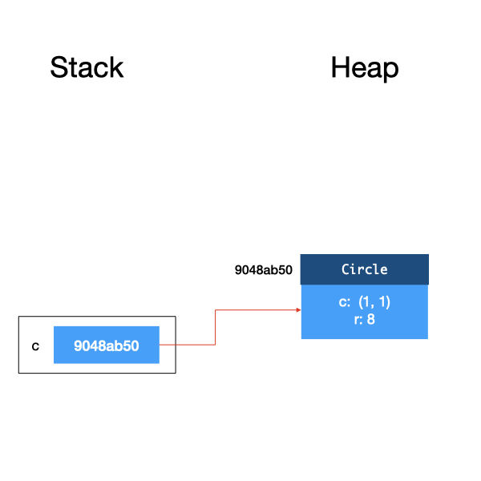
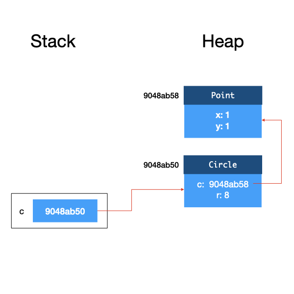
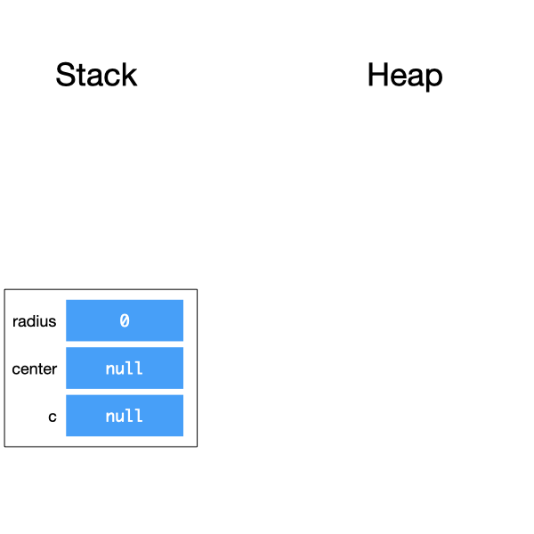
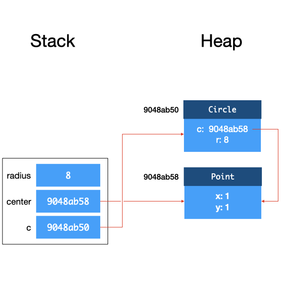
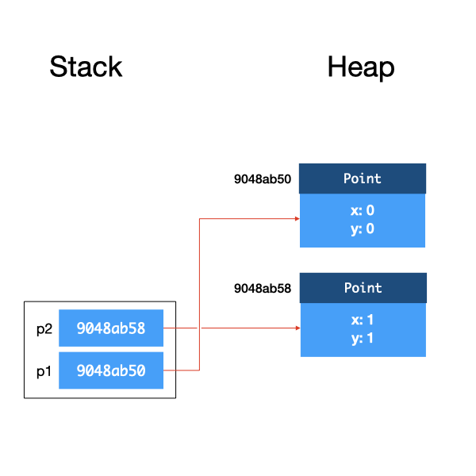
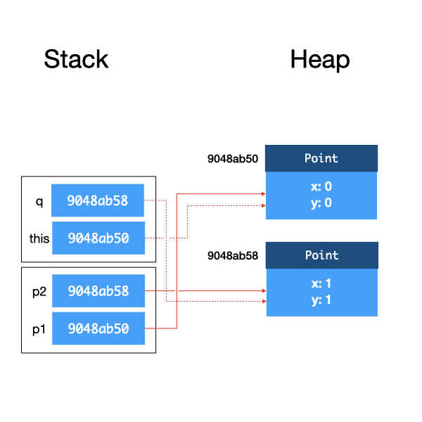
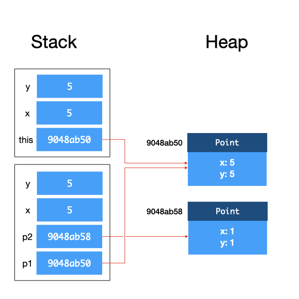

Unit 10: Heap and Stack
After taking this unit, students should:
- understand when memory are allocated/deallocated from the heap vs. from the stack
- understand the concept of call stack in JVM
Heap and Stack
The Java Virtual Machine (JVM) manages the memory of Java programs while its bytecode instructions are interpreted and executed. Different JVM implementations may implement these differently, but typically a JVM implementation partitions the memory into several regions, including:
- method area for storing the code for the methods;
- metaspace for storing meta information about classes;
- heap for storing dynamically allocated objects;
- stack for local variables and call frames.
Since the concepts of heap and stack are common to all execution environments (either based on bytecode or machine code), we will focus on them here.
The heap is the region in memory where all objects are allocated in and stored, while the stack is the region where all variables (including primitive types and object references) are allocated in and stored.
Considers the following two lines of code.
1 2 | |
c. When the JVM executes this line of code, it allocates some memory space for an object reference for c, the content is initialized to null. Since c is a variable, it resides in the stack.
Line 2 creates a new Circle object. When the JVM executes this line of code, it allocates some memory space for a Circle object on the heap. The memory address of this memory space becomes the reference of the object and is assigned to the variable c.
This is shown in the figure below.

The first argument to the Circle constructor is also an object, so to be more precise, when Line 2 above is executed, a Point object is also created and allocated on the heap. So the field c inside Circle is actually a reference to this object.

Now, let's look at a slightly different example.
1 2 3 4 5 6 | |
In the second example, we have three variables, c, center, and radius . Lines 1-3 declare the variables, and as a result, we have three variables allocated on the stack. Recall that for object references, they are initialized to null. Primitive type variables (e.g., radius) are initialized to 0.

After Lines 4-6, we have:

Call Stack
Now, let's look at what happens when we invoke a method. Take the distanceTo method in Point as an example:
1 2 3 4 5 6 7 8 9 10 11 12 13 | |
1 2 3 | |
After declaring p1 and p2 and creating both objects, we have:

When distanceTo is called, the JVM creates a stack frame for this instance method call. This stack frame is a region of memory that tentatively contains (i) the this reference, (ii) the method arguments, and (iii) local variables within the method, among other things12. When a class method is called, the stack frame does not contain the this reference.

You can see that the references to the objects p1 and p2 are copied onto the stack frame. p1 and this point to the same object, and p2 and q point to the same object.
Within the method, any modification done to this would change the object referenced to by p1, and any change made to q would change the object referenced to by p2 as well.
After the method returns, the stack frame for that method is destroyed.
Let's consider a new move method for the class Point that has two arguments (double x, double y) and moves the x and y cordinates of the Point.
1 2 3 4 5 6 7 8 9 10 11 12 13 14 | |
1 2 3 4 5 | |
Again, we create a stack frame, copy the reference to object p1 into this, copy x from the calling method to x the argument within the method, copy y from the calling method to y the argument within the method.

What is important here is that, as x and y are primitive types instead of references, we copy the values onto the stack. If we change x or y within move, the x and y of the calling function will not change. This behavior is the same as you would expect in C. However, unlike in C where you can pass in a pointer to a variable, you cannot pass in a reference to a primitive type in any way in Java. If you want to pass in a variable of primitive type into a method and have its value changed, you will have to use a wrapper class. The details of how to do this are left as an exercise.
To summarize, Java uses call by value for primitive types, and call by reference for objects.
If we made multiple nested method calls, as we usually do, the stack frames get stacked on top of each other.
One final note: the memory allocated on the stack is deallocated when a method returns. The memory allocated on the heap, however, stays there as long as there is a reference to it (either from another object or from a variable in the stack). Unlike C or C++, in Java, you do not have to free the memory allocated to objects. The JVM runs a garbage collector that checks for unreferenced objects on the heap and cleans up the memory automatically.